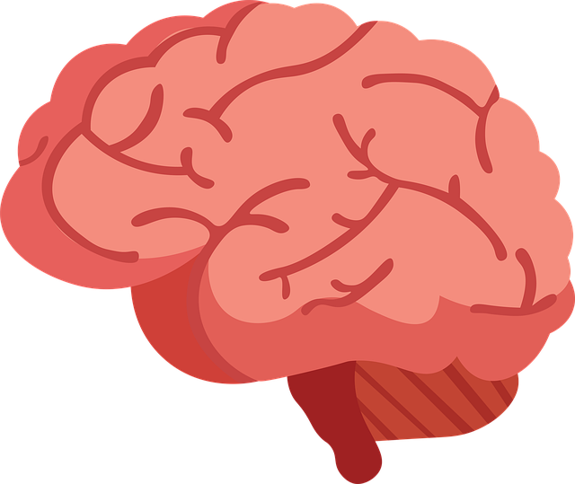
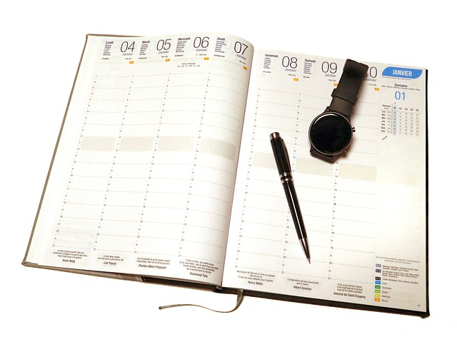

Ucz się w rytmie swojego mózgu – stosuj przerwy
- 🧠 Mózg potrzebuje regeneracji, żeby efektywnie zapamiętywać.
- 📌 Stosuj metodę Pomodoro (25 min nauki + 5 min przerwy) lub dostosuj bloki do siebie.
- 🚶 W przerwie wstań, poruszaj się, przewietrz pokój – to resetuje koncentrację.

Dbaj o ciało – ono też się uczy
- 💤 Śpij min. 7–8 godzin – sen utrwala wiedzę.
- 🥗 Jedz regularnie, unikaj słodyczy i energetyków – powodują zjazd energii.
- 🧘♂️ Dodaj ruch: choćby 10 minut spaceru czy rozciągania dziennie.

Nie ucz się w stresie – organizuj naukę z głową
- 📅 Planuj z wyprzedzeniem, rozłóż materiał na mniejsze części.
- 🚫 Nie zostawiaj wszystkiego na ostatnią chwilę – to najprostsza droga do przemęczenia i lęku.
- ❤️ Przypominaj sobie, że nie jesteś sam – szukaj wsparcia, jeśli czujesz presję.

Ucz się regularnie – stwórz rutynę
- 🕒 Stała pora nauki każdego dnia buduje nawyk i odciąża mózg – nie musisz się za każdym razem zastanawiać „kiedy siąść”.
- 📍 Nawet 30 minut dziennie daje więcej niż uczenie się przez 6 godzin raz na tydzień.
- ⏳ Regularność zmniejsza stres, bo czujesz, że masz wszystko pod kontrolą – a nie, że jutro koniec świata.
Buduj pozytywne nastawienie do nauki
- 🎯 Skup się na postępach, a nie tylko na ocenach – mierz swój rozwój.
- ❤️ Bądź dla siebie wyrozumiały – każdy dzień nie musi być idealny. Ale ważne, żeby był.
- 🧠 Ucz się z ciekawości, a nie tylko z musu – to zmienia wszystko.